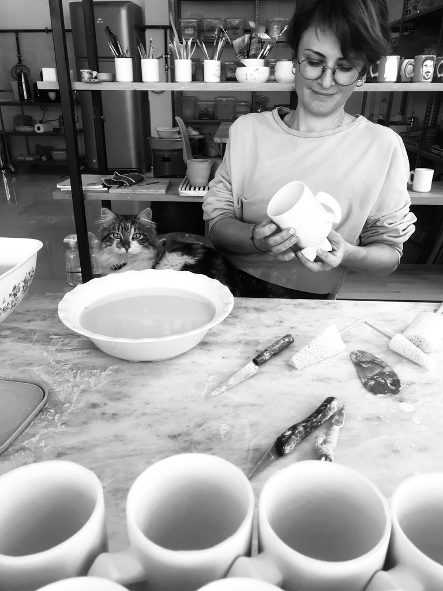

About
Vildan Hançer

5 Nisan 1980’de Erzincan’da doğdum.
İade tarihim
kaçırılmış olmalı ki kimliğim kasımda alınmış.
Ağaç
tepelerinden indirildiğim zamanlarda tekrar çıkmayayım
diye midir nedir, babaannem hep çamurla oyalamış
beni.
90’da deprem olunca Bursa’ya taşındık. Bu kelebek
etkisiyle İHL’den Güzel Sanatlara transfer oldum.
Sonra
da öğretmenlik.
Yüzlerce minik ele çamuru ilk ben
verdim. Tabaklar yaptım içini doldurmayı sevmediğim.
Kupalar yaptım sıcak dost sohbetleriyle çay
yudumladığım. Panolar, heykeller yaptım evleri ev yapan.
Sergiler açtım fularlı.
Şimdi yine, beni rüzgarlı ağaç
tepelerinden indiren tek şeyle uğraşıyorum.
Gökhan Hançer

1978 Bursa’da doğdum.
Kısa donlu diye tabir edilen yıllarda bile hep çizginin peşinde koştum.
Sevgili öğretmenim Filiz Paçal’ın verdiği gazın etkisi ne kadar büyükse...
Sonra orta okul lise yıllarında okul gazetesinde boy gösterdim (Evet boy göstermeyi kasıtlı olarak yazdım).
Hatta izci gazetesinde çizmem için transfer edilirken gönülsüz birkaç arkadaşımın da izci olmasına vesile olmuş olabilirim.Çizgi beni üniversiteye, oradan da resim öğretmenliğine savurdu. Ben hep çizdim. Başka bir şey bilmedim.
Sonra ödül verdiler. Hanımla evde top oynarken bir tanesini kırdık.
Ben çizer dururken kum verdiler onunla da çizdim. Tablet verdiler onunla da çizdim. Bazı arkadaşlar çizimleri gazete köşelerine koydu. Bazıları duvarına astı. Çok sevindim.
Benim çizdiğim gibi yazan arkadaşlarım oldu. Onlara da çocuk kitabı yaptım.
Şimdilerde hanımla beraber çamurla da oynuyoruz. Ben onların da üzerine çiziyorum.